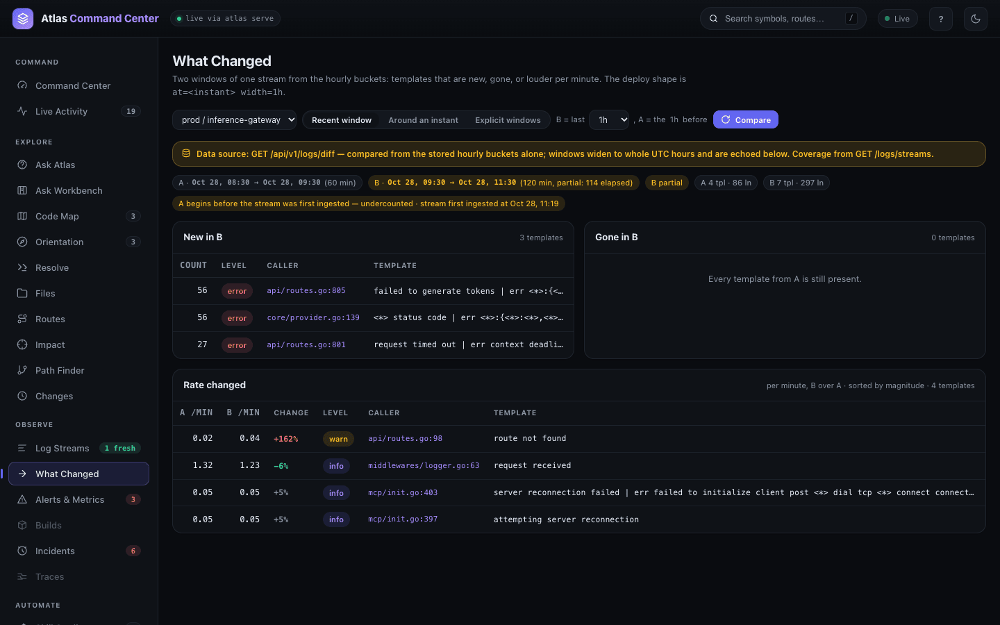
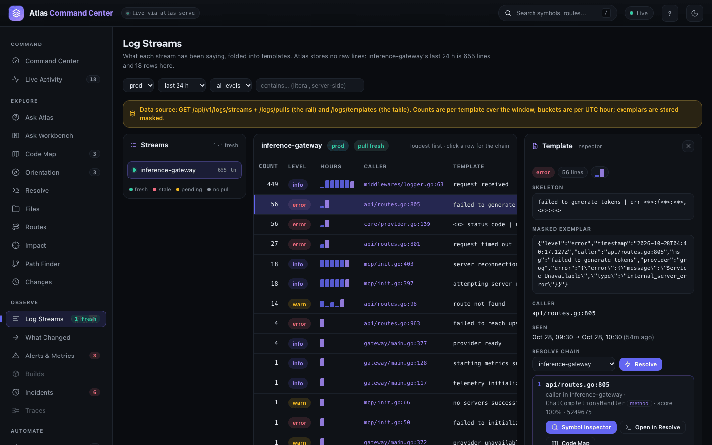
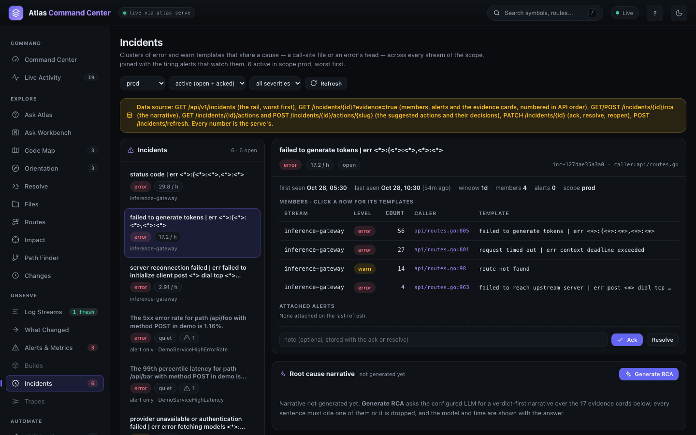
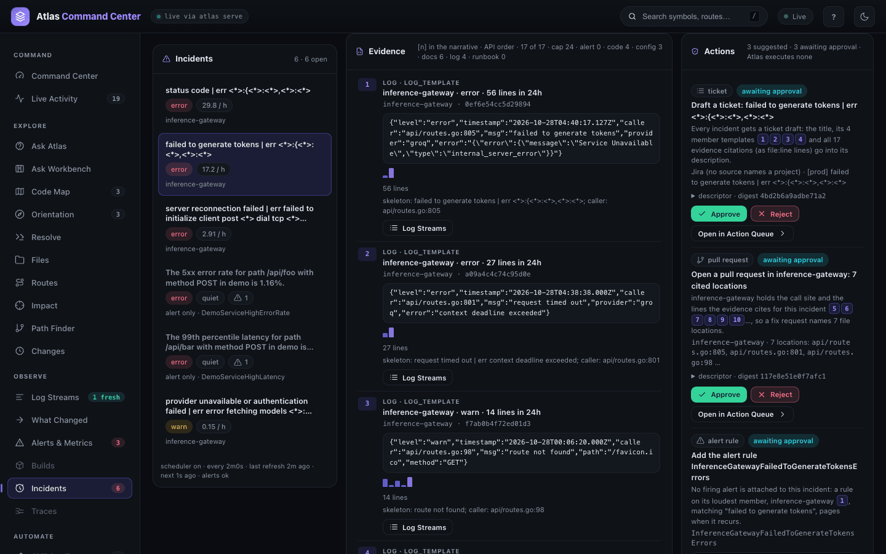
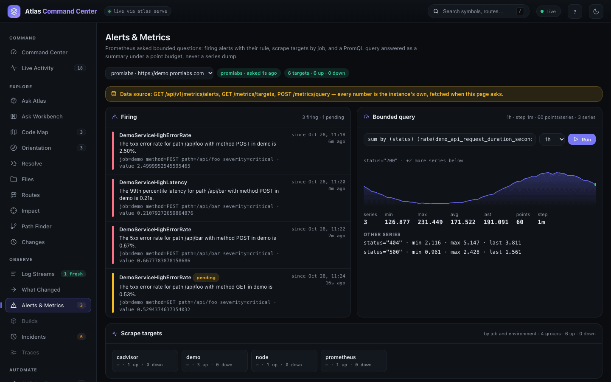
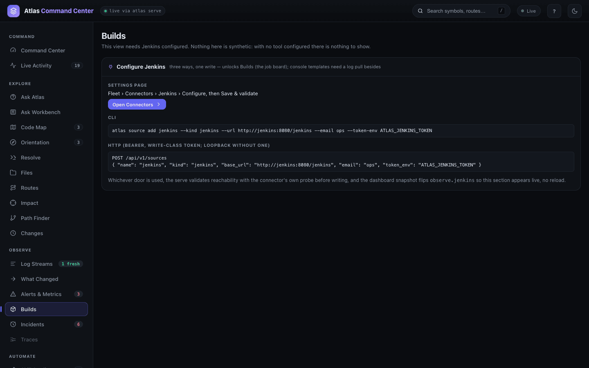
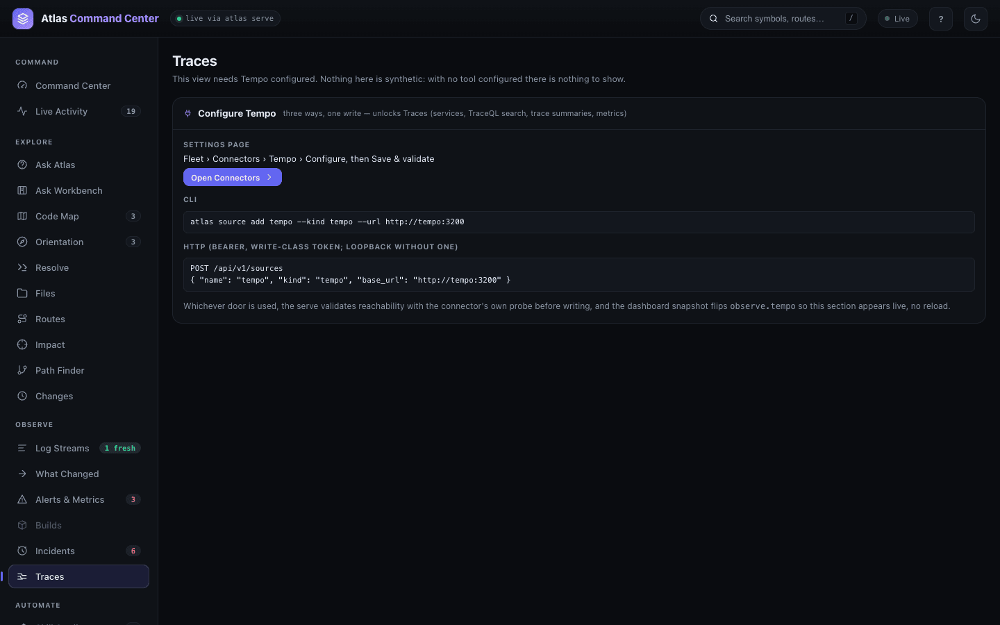
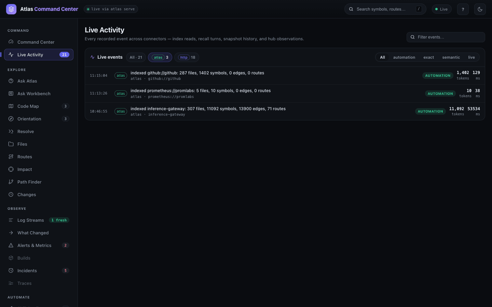

Observe
Observe connects Atlas to what your running system is doing: the logs it writes, the alerts that fire, the builds that fail and the traces it records. Atlas keeps a bounded summary of each — log templates with counts, alert and query summaries, trace summaries — and ties every line it can back to the file and function that emits it. Reach for it when something is wrong in production and you want to go from the symptom to the code in a few clicks.
Open It
The OBSERVE group sits in the dashboard's left rail: Log Streams (#/logs), What Changed (#/diff), Alerts & Metrics (#/alerts), Builds (#/builds), Incidents (#/incidents) and Traces (#/traces). Live Activity (#/events) is at the top of the rail, under COMMAND.
Each view needs one tool configured. Until it is, the view shows the three ways to configure that tool instead of data — nothing on these pages is sample data.
| View | Needs | Configure it with |
|---|---|---|
| Log Streams, What Changed, Incidents | a Grafana Loki or Elasticsearch log pull | atlas logs pull add |
| Alerts & Metrics | a Prometheus source | atlas source add <name> --kind prometheus |
| Builds | a Jenkins source | atlas source add <name> --kind jenkins |
| Traces | a Tempo source | atlas source add <name> --kind tempo |
The same settings live in Fleet › Connectors (#/connectors), and each one is also a single HTTP POST. Whichever way you use, the service checks it can reach the tool before it saves anything. The pages below were recorded on a service with one log pull from a local Loki and one Prometheus source:
atlas logs pull add inference-gateway --source loki --url http://127.0.0.1:3100 \
--selector '{app="inference-gateway"}' --stream inference-gateway --scope prod --since 7h
atlas source add promlabs --kind prometheus --url https://demo.promlabs.com
atlas source sync promlabsA running atlas serve picks a new pull up on its next tick and runs it every --every (default 5m). The source sync turns the Prometheus rules into documents Atlas can cite; the alerts and queries themselves are asked live. See Sources for the other source kinds.
About the demo logs. The log lines in these screenshots were generated for this guide in the exact JSON shape inference-gateway's logger writes, and pushed into a local Loki. Every caller in them is a real log call in the repository, so everything Atlas resolves below is real.
Read What a Stream Is Saying
Open Log Streams. Atlas does not store log lines. As each line arrives it is reduced to a template — the sentence with its ids, times and numbers replaced by <*> — and Atlas keeps, per template, a count per UTC hour, a severity hint, the caller and a few exemplars with secrets masked. A stream's whole history stays a few hundred rows however many lines produced it.
- The Streams rail lists every stream in the selected scope. The dot is the state of the pull that feeds it: fresh, stale (no successful pull within two cadences), pending, or no pull.
- The table is loudest first: count, level, an hours sparkline, the caller the line names, and the template.
- Narrow it with the scope picker, the window (last 15 min to last 7 d), the level, and contains… — a literal substring matched on the server, not a regex.
In this stream the three error templates that only appear in the last two hours — failed to generate tokens, <*> status code and request timed out — are the incident. The 449 request received lines are normal traffic.
To see what changed rather than what is loud, open What Changed. It compares two windows of one stream from the stored hourly counts: templates that are New in B, Gone in B, and those whose per-minute rate moved. Pick Recent window, Around an instant (either side of a deploy) or Explicit windows, then Compare.

Windows widen to whole UTC hours, and the page says so when a window is partial or starts before the stream was first fed.
Trace a Log Line to Its Code
Click a template row. The inspector on the right shows the skeleton, a masked exemplar, the caller and when it was first and last seen, then runs the resolve chain: it maps the exemplar to the file and line that emits it in the repository you pick (Atlas guesses the repository from the stream name).

A hit gives you three next steps: Symbol Inspector, Open in Resolve and Code Map, then Impact for the blast radius of the enclosing function. Run RCA opens the incident that groups this template, if there is one.
When nothing matches, the chain says so and why (for example, the caller names a file the selected repository does not carry) instead of guessing a plausible file.
Work an Incident
An incident is a group of error and warn templates that share a cause — the call-site file a structured line names, or the head of the error — across every stream of a scope, joined with the Prometheus alerts that are firing. The service recomputes incidents every 2 minutes over the last 24 hours (ATLAS_INCIDENTS_EVERY, ATLAS_INCIDENTS_WINDOW); Refresh does it now.

- Pick an incident in the rail. They are ordered worst first: severity, then lines per hour. An alert only row is a firing alert with no matching log template.
- Read the header: rate, state, the grouping key (
caller:api/routes.go), when it was first and last seen, and its members — click a member to open its template in Log Streams. - Scroll to Evidence: up to 24 citations, numbered [n] — the log templates, the code that emits them, config and code lines that name the same identifiers, matching docs and alert rules.
- Ack (with an optional note) to say someone is on it, or Resolve. A resolved incident reopens if one of its members is seen again.

Generate RCA asks the configured model for a verdict-first narrative over the evidence cards; every sentence must cite a card or it is dropped. The Actions card lists what to do next — a ticket draft, a pull request naming the cited files, an alert rule — as descriptors waiting in the Action Queue. Approving one records it for whoever carries it out; Atlas executes none of them.
Check Alerts and Query Metrics
Open Alerts & Metrics. Each panel is one bounded question to the Prometheus you configured, asked when the page loads.

- Firing — what fires and pends now, with the rule's summary, labels and value.
- Bounded query — type a PromQL expression, pick a window and press Run. The answer is a summary, never a series dump: the step Atlas chose so each series stays under its point budget, then min, max, avg and last per series.
- Scrape targets — up and down counts by job and environment, with the last error of any target that is down.
Connect Builds and Traces
Builds reads a Jenkins job board — each job's last result, duration and age — from the controller's Prometheus endpoint (the Prometheus metrics plugin), anonymously first and with the source's credential only when that is refused. Per-build console output is a separate Jenkins log pull, folded into templates like any log. No Jenkins is connected in this demo, so the view shows how to connect one:

Traces asks a Tempo four kinds of bounded question: which services have traces in a window, a TraceQL search (newest first, at most a limit), one trace summarized on one screen (the services it crossed, the five slowest spans, the error spans), and a TraceQL metrics query under a point budget. There is no public Tempo to point this guide at, so here it is before one is connected:

atlas source add tempo --kind tempo --url http://tempo:3200
atlas source add jenkins --kind jenkins --url http://jenkins:8080/jenkins --email ops --token-env ATLAS_JENKINS_TOKENThe view appears as soon as the source is saved; no reload is needed.
Watch Live Activity
Live Activity is every event the service records across its connectors — index reads, recall turns, snapshot history and hub observations. Each row shows the time, the connector, what happened, the repository, how it was served, the tokens it returned and its latency. Filter by connector with the chips, by tier (automation, exact, semantic, live), or with Filter events….

From the CLI
Every view has a command, and every command answers a bounded question. Streams the dashboard does not show — lines piped in with atlas logs ingest — are read the same way. A piped line counts in the hour it was ingested; a pull keeps each line's own time.
$ atlas logs ingest --stream inference-gateway --scope local --source-kind file < gateway-info.log
{ "source": "stdin", "scope": "local", "stream": "inference-gateway", "batches": 1,
"lines_read": 477, "lines_ingested": 477, "lines_skipped": 0, "templates": 9, … }
$ atlas logs streams
STREAM SCOPE KIND LAST_INGEST LABELS
inference-gateway local file 2026-10-28T06:14:21Z -
inference-gateway prod loki 2026-10-28T05:49:01Z app=inference-gateway,detected_level=warn,env=prod,service_name=inference-gateway
$ atlas logs templates --stream inference-gateway --scope prod --since 24h --limit 6
COUNT SEVERITY LAST_SEEN CALLER SKELETON
449 info 2026-10-28T05:00:00Z middlewares/logger.go:63 request received
56 error 2026-10-28T05:00:00Z api/routes.go:805 failed to generate tokens | err <*>:{<*>:<*>,<*>:<*>
56 error 2026-10-28T05:00:00Z core/provider.go:139 <*> status code | err <*>:{<*>:<*>,<*>:<*>
27 error 2026-10-28T05:00:00Z api/routes.go:801 request timed out | err context deadline exceeded
18 info 2026-10-28T05:00:00Z mcp/init.go:403 server reconnection failed | err failed to initialize client post <*> dial tcp <*> connect connection refused
18 info 2026-10-28T05:00:00Z mcp/init.go:397 attempting server reconnection
$ atlas logs diff --stream inference-gateway --scope prod --window 1h
LIST COUNT_A COUNT_B CHANGE SEVERITY CALLER SKELETON
new 0 56 new error api/routes.go:805 failed to generate tokens | err <*>:{<*>:<*>,<*>:<*>
new 0 56 new error core/provider.go:139 <*> status code | err <*>:{<*>:<*>,<*>:<*>
new 0 27 new error api/routes.go:801 request timed out | err context deadline exceeded
changed 1 5 +165% warn api/routes.go:98 route not foundatlas logsites resolve is the resolve chain on its own. It accepts raw lines or skeletons; a line the repository does not emit comes back matched: false with a reason.
$ atlas logsites resolve '{"level":"error","timestamp":"2026-10-28T04:38:38.000Z","caller":"api/routes.go:801","msg":"request timed out","provider":"groq","error":"context deadline exceeded"}' 'failed to reach upstream server'
{
"commit_sha": "524967508e9d90185c4a1c3540cac0dcda7c580a",
"results": [
{ "matched": true, "file": "api/routes.go", "line": 801, "symbol": "ChatCompletionsHandler",
"kind": "method", "score": 1, "reason": "caller",
"skeleton": "request timed out | err context deadline exceeded" },
{ "matched": true, "file": "api/routes.go", "line": 963, "symbol": "MessagesHandler",
"kind": "method", "score": 1, "reason": "exact_skeleton",
"skeleton": "failed to reach upstream server" }
]
}$ atlas metrics alerts
metrics alerts source promlabs firing 3 pending 0 shown 3 of 3 limit 50 columns state/active_at/name/value/labels :: summary
firing 2026-10-28T05:48:01Z DemoServiceHighErrorRate 0.5285230431169889 {job="demo",method="GET",path="/api/foo",severity="critical"} :: The 5xx error rate for path /api/foo with method GET in demo is 0.53%.
…
$ atlas metrics query 'sum by (status) (rate(demo_api_request_duration_seconds_count[5m]))' --window 1h
metrics query source promlabs mode range window 1h step 1m (60s) max_points 60 points_per_series 60 series 3 of 3 limit 20
{status="200"} points 60 min 125.881 max 230.853 avg 171.563 first 191.586 last 200.881@2026-10-28T05:52:51Z
{status="404"} points 60 min 2.11579 max 5.14737 avg 3.33526 first 3.90527 last 4.10526@2026-10-28T05:52:51Z
{status="500"} points 60 min 0.954386 max 2.38245 avg 1.52099 first 1.61755 last 1.66667@2026-10-28T05:52:51Z
$ atlas metrics rules
metrics rules source promlabs repo prometheus://promlabs groups 1 rules 5 alerting 5 recording 0 firing_rules 1 firing_alerts 2 unhealthy 0 shown 5 limit 500
alerting firing 2 DemoServiceHighErrorRate prometheus/rules/demo-service-alerts/demo-service-high-error-rate.md
…$ atlas incidents list --scope prod
incidents scope prod state active severity - shown 6 of 6 limit 50 columns id/severity/state/rate_per_hour/streams/members/alerts/last_seen :: title
inc-f884ea2508ed error open 29.81/h inference-gateway 1 0+0 2026-10-28T05:00:00Z :: status code | err <*>:{<*>:<*>,<*>:<*>
inc-127dae35a3a0 error open 17.18/h inference-gateway 4 0+0 2026-10-28T05:00:00Z :: failed to generate tokens | err <*>:{<*>:<*>,<*>:<*>
inc-27eb60fce071 error open 2.908/h inference-gateway 3 0+0 2026-10-28T05:00:00Z :: server reconnection failed | err failed to initialize client post <*> dial tcp <*> connect connection refused
inc-1c7810a0f77d error open 0/h - 0 1+0 2026-10-28T05:52:42Z :: The 5xx error rate for path /api/foo with method POST in demo is 1.16%.
…
$ atlas incidents show inc-127dae35a3a0 --evidence
incident inc-127dae35a3a0 error open 17.18/h window 24h key caller:api/routes.go
members 4 columns stream/severity/count/caller :: skeleton
inference-gateway error 56 api/routes.go:805 :: failed to generate tokens | err <*>:{<*>:<*>,<*>:<*>
inference-gateway error 27 api/routes.go:801 :: request timed out | err context deadline exceeded
inference-gateway warn 14 api/routes.go:98 :: route not found
inference-gateway error 4 api/routes.go:963 :: failed to reach upstream server | err post <*> dial tcp lookup api.anthropic.com i/o timeout
evidence shown 17 of 17 cap 24 terms api.anthropic.com columns kind/source/where/score :: title | excerpt | note
code caller_resolve inference-gateway api/routes.go:805 1 :: api/routes.go:805 ChatCompletionsHandler | … router.logger.Error("failed to generate tokens", err, "provider", providerID) | …
config content_scan inference-gateway providers/constants/constants.go:10 1 :: … AnthropicDefaultBaseURL = "https://api.anthropic.com/v1" …
…With no Jenkins or Tempo configured, atlas builds and atlas traces say exactly what to add:
$ atlas traces services
atlas: no Tempo source is configured — add one: atlas source add <name> --kind tempo --url http://tempo:3200
$ atlas builds jobs
atlas: builds_source_not_found: no jenkins source is configured — `atlas source add <name> --kind jenkins --url http://jenkins:8080/jenkins --email <jenkins user id> --token-env ATLAS_JENKINS_TOKEN` records one; the board reads only its urlAssistants reach the same reads through the MCP tools logs, logsite, metrics, builds, traces and incidents (MCP Tools). The full flag list is in the CLI reference.
From the API
Each view names its data source on the page. The routes behind them:
GET /api/v1/logs/streams,/logs/templates,/logs/diff,/logs/pulls;POST /api/v1/logs/ingestand/logs/pullsPOST /api/v1/resolve— the resolve chain's first stepGET /api/v1/metrics/alerts,/metrics/targets;POST /api/v1/metrics/queryGET /api/v1/buildsandGET /api/v1/traces?op=services|search|trace|metricsGET /api/v1/incidents,/incidents/{id}?evidence=true,/incidents/{id}/actions;POST /api/v1/incidents/refresh;PATCH /api/v1/incidents/{id}to ack, resolve or reopen
Writes need the read-write token when the service enforces one. See Dashboard and HTTP API.
Related
- Sources — Prometheus, Jenkins, Tempo, Grafana and the knowledge sources Atlas indexes.
- Impact — the blast radius of the function a log line resolves to.
- Skills and automations — the Action Queue where incident actions wait for approval.
- MCP Tools — the Observe tools assistants call.
- Configuration —
ATLAS_INCIDENTS_EVERY,ATLAS_INCIDENTS_WINDOWand the log pull token allowlist.